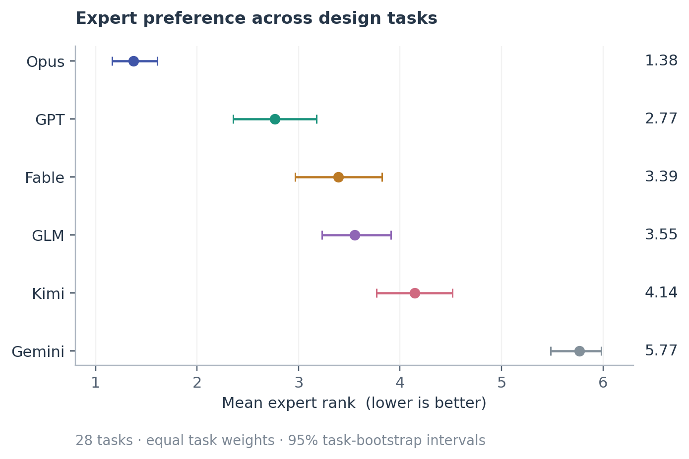
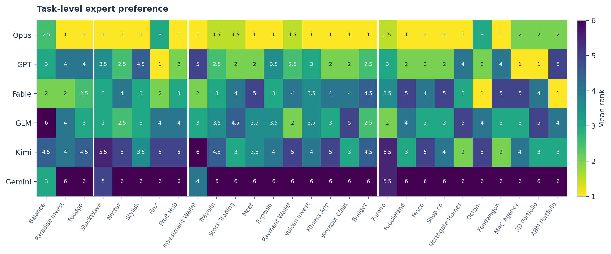
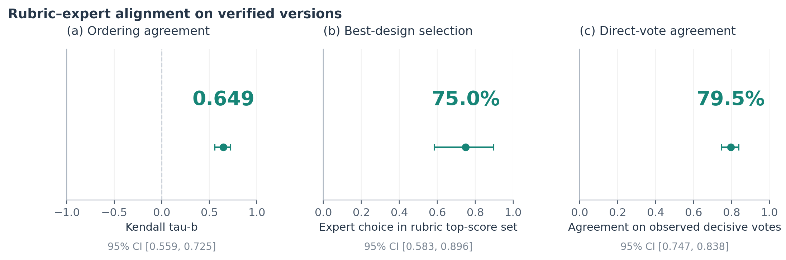
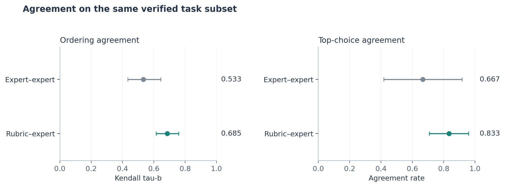
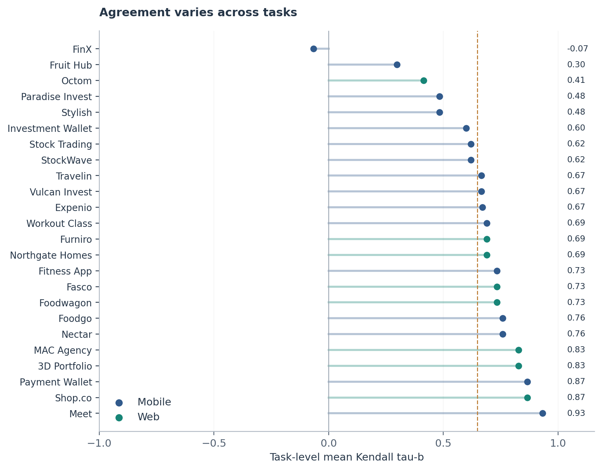
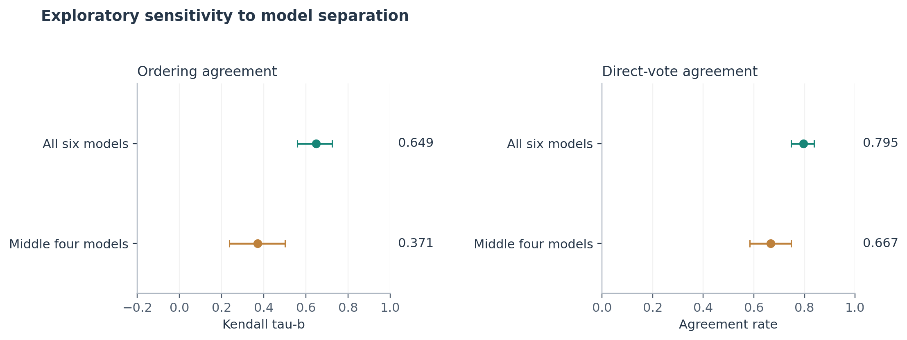

基于本地评测快照的第一优先级分析，整理于2026年11月8日。图表汇总专家判断，不显示评审身份、逐人曲线或评审人数；方法说明保留真实采样设计。本报告使用任务等权口径，不能与先前按会话或按单个评审报告的数字直接混用。
| 分析集合 | 范围 | 处理 |
|---|---|---|
| 专家独立评价 | 28题，6模型 | 按题内可用的完整排序求平均，每题等权；不是42道独立题 |
| 严格匹配主分析 | 24题，144个候选 | 同时核验run、原始score_id/方法/分数、全部交付图SHA256 |
| 人评重叠题 | 14题；其中严格匹配12题 | 评审间一致性只在相同任务、相同候选上计算 |
| 排除 | Chat Bot AI整题 | 旧GPT不参与任何主结果或敏感性分析；暂不以更新产物替换旧人评 |
| 扩展敏感性 | 28题 | 增加Balance、Budget、Foodieland、ABM；仅使用Arena内嵌分数，不能冒充原始评分记录已核实 |
174个Arena候选中，169个通过同run、原始评分和交付图哈希联合核验。5个版本不一致候选中，Chat Bot AI×GPT连同该题全部排序排除，避免旧候选影响其他模型的相对位置；其余4道题从严格主分析移除。Qwen只有3题且未参加Arena，不参与六模型比较。逐候选版本核验。
快照核对发现FinX在sorting.json中已完成，而SQLite停在较早revision；主分析采用较新的完成排序导出。仅采用SQLite也标为完成的题目时，严格样本为23题，τ-b为0.680 [0.618, 0.738]。这一差异不应隐藏，见快照差异表。
| 模型简称 | 平均名次 | 95%任务bootstrap区间 |
|---|---|---|
| Opus | 1.38 | [1.16, 1.61] |
| GPT | 2.77 | [2.36, 3.18] |
| Fable | 3.39 | [2.96, 3.82] |
| GLM | 3.55 | [3.23, 3.91] |
| Kimi | 4.14 | [3.77, 4.52] |
| Gemini | 5.77 | [5.48, 5.98] |
模型简称对应原始配置：Opus 5.5（三方A）、gpt-6-astra、Fable 5.1、GLM-5.3 Flash、Kimi K3、Gemini 3.5 Flash。模型名必须在投稿前核实是否匿名代号。当前交付包含不同次数补跑，结果描述的是本次交付产物及运行配置，不代表统一预算下的单次成功率。
| 指标 | 题集 | 估计与95%区间 |
|---|---|---|
| Rubric–expert排序 | 严格24题 | 0.649 [0.559, 0.725] |
| Rubric–expert首选集合命中 | 严格24题 | 75.0% [58.3%, 89.6%] |
| Rubric–expert唯一最高分命中 | 严格24题 | 70.8% [54.2%, 85.4%] |
| Rubric–expert直接票一致率 | 严格24题 | 79.5% [74.7%, 83.8%] |
| Expert–expert排序 | 全部14个重叠题 | 0.524 [0.419, 0.638] |
| Expert–expert首选一致 | 全部14个重叠题 | 64.3% [35.7%, 85.7%] |
| Expert–expert排序 | 相同严格12题 | 0.533 [0.433, 0.644] |
| Rubric–expert排序 | 相同严格12题 | 0.685 [0.615, 0.759] |
主直接票一致率79.5%是先在每个完整判断中计算，再在题内、题间平均。将所有票直接相加会得到268/332=80.7%，这只是票数加权的次要描述；19张自动同分票单独计数，不伪装为胜负。自适应比较协议并非均匀抽样所有模型对，因此该指标不应外推为任意随机模型对的准确率。
正文建议保留图1、图3、图6；图2、图4、图5放附录。使用点与置信区间替代仅柱状均值，避免雷达图。任务级热力图帮助发现异质性，不把42次会话当作42道任务。






| 发现 | 证据 | 可写范围 |
|---|---|---|
| 专家独立评价区分产物质量 | Opus平均名次1.38；其余依次为GPT 2.77、Fable 3.39、GLM 3.55、Kimi 4.14、Gemini 5.77 | 描述本次任务、现有专家面板和交付配置；Fable与GLM的接近均值不能写成已证明显著优劣 |
| 自动评价捕捉总体相对差异 | 严格样本τ-b 0.649 [0.559,0.725]；直接票一致率79.5% [74.7%,83.8%] | 支持正向一致性；不等于替代专家，也不证明每个Rubric维度有效 |
| 排序与选优是不同能力 | 首选集合命中75.0%，唯一最高命中70.8% | 必须报告自动并列；75%不是独立的18/24二项试验次数，因为先进行了题内判断平均 |
| 相近产物仍难细分 | 中间四模型τ-b 0.371 [0.236,0.501]；全六减中四配对差0.278 [0.163,0.391]；直接票一致率降至66.7% | 明确事后探索；子集来自当前数据，不能写为预注册验证或因果机制 |
| 不同任务的一致性不均匀 | FinX -0.067、Fruit Hub 0.298、Octom 0.414 | 说明需逐题诊断；FinX同时存在快照状态差异，不能直接归因于量表设计 |
We report expert preferences independently of rubric-based evaluation. Averaging complete expert rankings within each task and assigning equal weight to tasks, Opus obtains the lowest mean rank (1.38; 95% task-bootstrap CI [1.16, 1.61]) across 28 design tasks. These aggregate ranks summarize the observed judgments rather than asserting a unanimous consensus.
On 24 tasks whose candidate runs, original rubric score records, and delivered screenshot hashes were verified, rubric scores exhibit positive alignment with expert preferences: mean Kendall’s tau-b is 0.649 (95% CI [0.559, 0.725]). The expert-preferred design belongs to the rubric’s highest-score set in 75.0% of task-weighted judgments; requiring a unique highest score reduces this rate to 70.8%. Agreement on observed decisive pairwise comparisons is 79.5% (95% CI [74.7%, 83.8%]), excluding automatic-score ties. These results support rubric-based evaluation as a complementary scalable measure, without establishing equivalence to expert judgment.
In an exploratory post-hoc analysis, removing the aggregate ranking extremes reduces ordering agreement among the remaining four models from 0.649 to 0.371, a paired task-level decrease of 0.278 (95% CI [0.163, 0.391]). Direct-vote agreement decreases from 79.5% to 66.7%. Thus, aggregate alignment does not by itself establish reliable discrimination among closer-performing candidates.
本地完整排序来自2位评审，分别覆盖28题和14题，共42个完整会话、28道不同题；二者重叠14题。不能用汇总图省略这些方法事实，也不能把“专家偏好”改称具有广泛代表性的“专家共识”。图中不编码人数或身份，方法与限制章节如实披露采样范围。
| 设置 | τ-b | 首选集合命中 | 直接票一致率 |
|---|---|---|---|
| 严格匹配24题 | 0.649 [0.559, 0.725] | 75.0% [58.3%, 89.6%] | 79.5% [74.7%, 83.8%] |
| 扩展Arena内嵌分数28题 | 0.645 [0.562, 0.716] | 71.4% [55.4%, 85.7%] | 78.8% [74.3%, 82.9%] |
| SQLite也完成23题 | 0.680 [0.618, 0.738] | 78.3% [63.0%, 91.3%] | 80.8% [76.7%, 84.6%] |
| 中间四模型，事后探索24题 | 0.371 [0.236, 0.501] | 50.0% [33.3%, 66.7%] | 66.7% [58.5%, 74.8%] |
运行python arena/analysis/priority1_paper.py。输入快照哈希、抽样口径和数值见paper_summary.json；排名统计、逐题一致性、任务级汇总名次。原始审计文件留在分析目录，不作为图版中的评审身份展示。